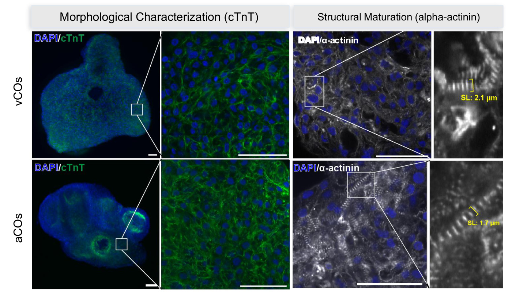

Experimental research · M.S. thesisChamber-specific
Chamber-specific
cardiac organoids
How does chamber-associated identity relate to the way a tissue handles calcium and contracts?
My contribution · Culture and differentiation, tissue characterization, functional imaging, and quantitative analysis.
Explore the research story